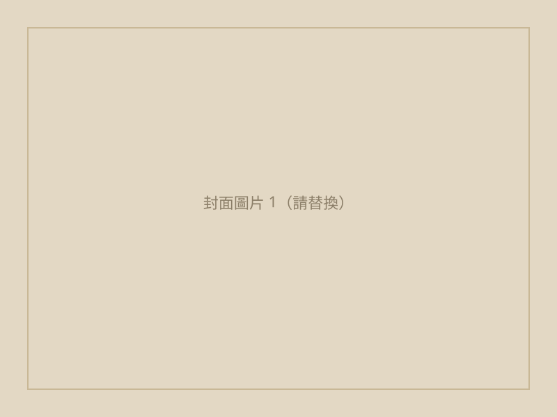

← 回文章列表
旅遊
多洛米蒂 Day 8｜Sassolungo 短環線 ＋ 石頭城 ＋ #16/#17 纜車
這天因為我們就住在 Passo Sella 區，所以可以很方便規劃來走 Sassolungo（薩索倫戈峰）的短環線（結合 525 號與 526 號步道），途中再用 Gardena card 去體驗搭乘 #16 和 #17 號纜車。
早餐在飯店吃了非常豐盛且開心的 Buffet 之後，我們在 10 點準時辦理退房，並向山屋借用了登山杖啟程。一樣先搭乘 #18 號纜車上到 Sassolungo 山心（鞍部），接著從鞍部一路下切到山谷。這段往下走的是 525 號步道，一路下切到 Rifugio Vicenza（維琴察山屋），再下到山谷接著接上 526 號步道準備繞著 Sassolungo 山體順時針走一圈。
526 號步道在途中又分成了 526A 和 526/526B：526A 是距離山體絕壁比較近、稍微有些起伏的岩石路段；526/526B 則是比較偏外圍、相對平緩許多的路段。如果走 526A 可以更震撼地貼著山壁前進。我們最後選擇走 526A 一路去到了 Rifugio Comici（科米奇山屋）。這裡可以稍作休息、上洗手間，有一件超漂亮的洗手間！
繼續走 526 號步道主線，繼續順時針往 Passo Sella 的方向前進。途中會經過 #17 號纜車 (Gran Paradiso) 的搭乘處，我們就沿著 #17 號纜車往山下搭，再接 #16 號纜車 (Piz Setëur) 去到下方，然後原路搭纜車回程上山，繼續沿著 526 號步道走回去。當然，如果是想下山的人，也可以在 #17 和 #16 號纜車往下搭到 Plan de Gralba 之後轉公車或走公路回去 Passo Sella。不過我們回到了原本的 #17 號上站，從那裡沿著 526 號步道走回 Passo Sella 的路程很短，只有約 20 分鐘，而且是穿梭在石頭城 (Città dei Sassi) 中間，景色非常特別且漂亮。
大約下午四點左右回到 Passo Sella 拿行李，接著準備搭乘 4:22 發車的 471 號公車，前往西邊的 Ortisei（奧爾蒂塞伊）小鎮。西邊的 Ortisei 小鎮感覺明顯比東邊的 Dobbiaco 熱很多，不知道是不是因為海拔與盆地地形的關係？
因為抵達時正好是禮拜天的傍晚，所以鎮上只有一家當地的超市（Despar）有開，裡面採買的人超擠得水洩不通！我們趕緊採買了一點點補給品就趕快出來了，後來幾天去逛 Conad 超市的購物體驗就好非常多。接著在鎮上的 Gelateria 吃了義式冰淇淋降降溫，再回到預訂好的公寓煮晚餐、休息。